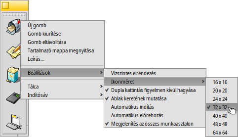

Az oldal fordítása még folyamatban van. Amíg tart a fordítás, addig a lefordítatlan részek angolul jelennek meg.
 Indítósáv (LaunchBox)
Indítósáv (LaunchBox)
| Asztalsáv: | ||
| Útvonal: | /boot/system/apps/LaunchBox | |
| Beállítások: | ~/config/settings/LaunchBox/* |
Egy vagy több Indítósávot is elindíthatunk a kedvenc programjaink és dokumentumaink gyorsindítására. Akár az összes munkaasztalon is megjelenhetnek. A program a dokumentumokat a megadott programmal is elindíthatja. Például, ha egy HTML fájlt egy, az Indítósávon lévő szövegszerkesztőre dobunk, akkor a program megnyitja azt a fájlt a szövegszerkesztőben.
Az összes opció elérhető a helyi menüből:
| Egy üres gomb hozzáadása. | |||
| Egy meglévő gombot kiürít. | |||
| Eltávolítja a gombot. | |||
| Az egeret az ikon felett tartva megjelenik egy kis üzenet a fájl nevével, és program esetében az ahhoz tartozó rövid leírással (további információ a Fájltípusok fejezetben). Ezzel a menüvel személyre szabhatjuk a megjelenő üzenetet. | |||
Aligns the buttons horizontally. Sets the icon size between 16 and 64 pixel. Launches the object only once, even when you (accidentally) double-click. Shows the window border. Starts LaunchBox automatically on boot-up. LaunchBox pops up if the mouse is near the screen edge. Shows the LaunchBox on every workspace. | |||
Új tálca. A jelenlegi tálca másolása. Jelenlegi tálca bezárása. | |||
Bázárja a programot az összes tálcával együtt. |